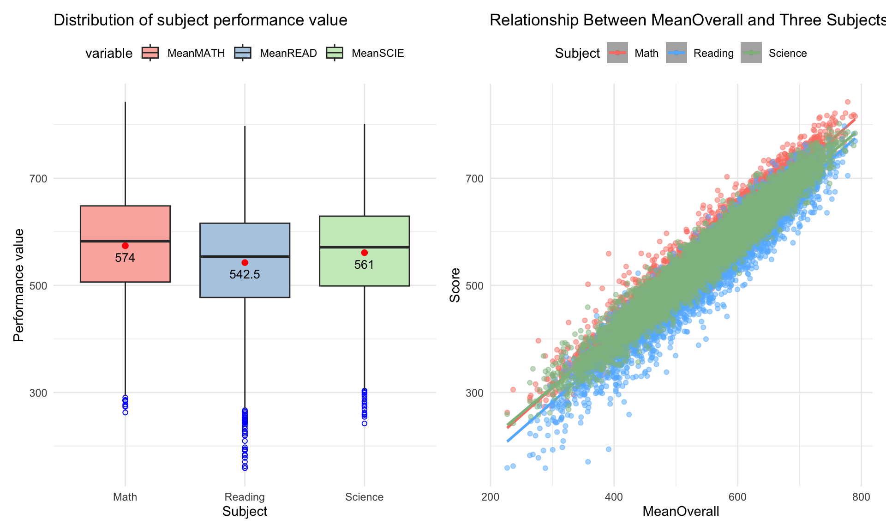
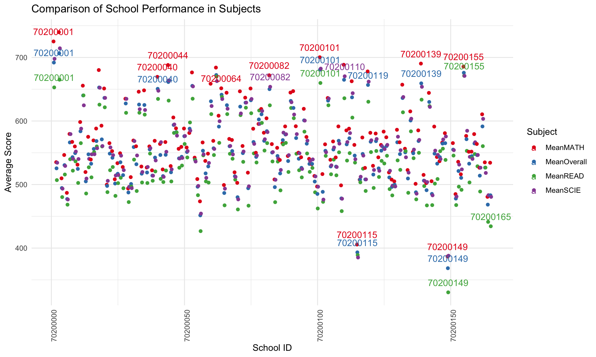

pacman::p_load(tidyverse, ggplot2, dplyr, readr, ggpubr,
scales,forcats, gridExtra, corrplot, Hmisc, lubridate,knitr, kableExtra,patchwork)Take-home Exercise 1
1 Project Brief
While Singapore has made strides in reducing disparities in family wealth, its education policy is committed to ensuring high-quality education in every school. However, the general public still perceives persistent educational inequalities, especially between elite and ordinary community schools, as well as among students from different socioeconomic backgrounds and immigrant families. We will delve deeply into the state of education in Singapore, based on the data provided by the 2022 Programme for International Student Assessment (PISA).
2 Project Objectives
The aim of this project is to conduct an Exploratory Data Analysis (EDA) using the 2022 PISA data, focusing on students in Singapore. The analysis will explore the distribution of Singaporean students' performance in mathematics, reading, and science, and examine the relationship between these performances and various factors such as school, gender, and socioeconomic status. The analysis will be visualized effectively to communicate the findings derived from the data.
3 Data Preparation
3.1 Install and launching R packages
We use the pacman::p_load() function to load the required R packages into our working environment. The loaded packages are:
tidyverse: A collection of packages for data manipulation and visualization, including ggplot2, dplyr, tidyr, etc.
ggplot2: For creating complex charts and visualizations.
dplyr: For data manipulation and cleaning.
readr: For reading CSV files.
ggpubr: Provides easy-to-use functions for creating publication-quality charts.
scales: For beautifying charts, like adjusting axes.
lubridate: For handling date data, if your data includes time information.
forcats: For handling categorical variables, which could be useful for dealing with variables like gender and school IDs.
gridExtra or cowplot: For arranging multiple plots on a single page.
corrplot: For visualizing correlations between variables.
Hmisc: Contains many functions useful for data analysis, such as descriptive statistics.
kableExtra:using for creating and beautifying tables. With the kableExtra package, you can easily add titles, footnotes, change table styles, merge cells, and more.
Notes
The R package intsvy allows R users to analyse PISA data among other international large-scale assessments. The use of PISA data via R requires data preparation, and intsvy offers a data transfer function to import data available in other formats directly into R. Intsvy also provides a merge function to merge the student, school, parent, teacher and cognitive databases.
But here we only consider the situation in Singapore and don’t need a comparison between countries, so we don’t use this package.
Please refer to the details for more information.Instructions
3.2 Dataset Organization
Read ’stu_qqq_SG’file.
stu_qqq_SG <- read_rds("data/stu_qqq_SG.rds")3.2.1 Research Variable Selection
Extracting valuable variables from the original dataset because we are investigating the distribution of academic performance among Singaporean students in mathematics, reading, and science, as well as the relationship between these performances and students’ schools, gender, and socio-economic status.
I have extracted the following variables:
CNTSTUID:Intl. Student ID
CNTSCHID:Intl. School ID
ST004D01T:Student (Standardized) Gender,1 female,2male
ESCS:Index of economic, social and cultural status
PV1-10MATH:Plausible Value 1-10 in Mathematics
PV1-10READ:Plausible Value 1-10 in Reading
PV1-10SCIE:Plausible Value 1-10 in Science
The previous table information is too cumbersome. I will extract all these variables to create a new table, making it more conducive to subsequent analysis.
stu_qqq_SG_01 <- stu_qqq_SG[, c("CNTSTUID", "CNTSCHID", "ST004D01T", "ESCS",
"PV1MATH", "PV2MATH", "PV3MATH", "PV4MATH", "PV5MATH",
"PV6MATH", "PV7MATH", "PV8MATH", "PV9MATH", "PV10MATH",
"PV1READ", "PV2READ", "PV3READ", "PV4READ", "PV5READ",
"PV6READ", "PV7READ", "PV8READ", "PV9READ", "PV10READ",
"PV1SCIE", "PV2SCIE", "PV3SCIE", "PV4SCIE", "PV5SCIE",
"PV6SCIE", "PV7SCIE", "PV8SCIE", "PV9SCIE", "PV10SCIE")]
write_rds(stu_qqq_SG_01,
"data/stu_qqq_SG_01.rds")3.2.2 Data overview
Reviewing the table to obtain an overview and understand the general situation of the data.
stu_qqq_SG_01 <- read_rds("data/stu_qqq_SG_01.rds")Displaying first 5 rows using head():
head(stu_qqq_SG_01,5) %>%
kbl() %>%
kable_material() %>%
scroll_box(width = "400%", height = "300px")| CNTSTUID | CNTSCHID | ST004D01T | ESCS | PV1MATH | PV2MATH | PV3MATH | PV4MATH | PV5MATH | PV6MATH | PV7MATH | PV8MATH | PV9MATH | PV10MATH | PV1READ | PV2READ | PV3READ | PV4READ | PV5READ | PV6READ | PV7READ | PV8READ | PV9READ | PV10READ | PV1SCIE | PV2SCIE | PV3SCIE | PV4SCIE | PV5SCIE | PV6SCIE | PV7SCIE | PV8SCIE | PV9SCIE | PV10SCIE |
|---|---|---|---|---|---|---|---|---|---|---|---|---|---|---|---|---|---|---|---|---|---|---|---|---|---|---|---|---|---|---|---|---|---|
| 70200001 | 70200052 | 1 | 0.1836 | 639.004 | 601.251 | 621.480 | 631.596 | 579.276 | 591.791 | 600.709 | 587.322 | 618.131 | 581.973 | 676.298 | 692.247 | 690.981 | 643.067 | 627.908 | 684.676 | 661.380 | 674.070 | 666.282 | 657.387 | 710.634 | 618.739 | 591.623 | 659.770 | 635.892 | 646.901 | 603.569 | 621.352 | 659.674 | 649.719 |
| 70200002 | 70200134 | 2 | 0.8261 | 697.191 | 754.277 | 671.940 | 657.300 | 621.126 | 655.729 | 747.934 | 694.365 | 742.732 | 656.934 | 625.585 | 686.716 | 663.147 | 567.435 | 614.500 | 604.745 | 669.375 | 623.735 | 649.579 | 571.261 | 670.646 | 748.839 | 635.443 | 639.735 | 608.385 | 670.662 | 734.807 | 639.748 | 716.768 | 655.670 |
| 70200003 | 70200112 | 2 | -1.0357 | 693.710 | 654.450 | 696.938 | 646.187 | 678.119 | 644.019 | 720.531 | 671.425 | 694.085 | 668.304 | 620.116 | 559.078 | 554.767 | 587.026 | 591.806 | 570.547 | 599.078 | 545.610 | 610.466 | 590.758 | 666.095 | 604.771 | 704.217 | 687.659 | 690.974 | 617.175 | 692.886 | 630.900 | 656.620 | 649.087 |
| 70200004 | 70200004 | 2 | -0.9606 | 427.317 | 410.376 | 423.586 | 388.935 | 330.962 | 379.988 | 398.535 | 422.127 | 375.354 | 453.348 | 381.495 | 400.815 | 374.911 | 367.484 | 336.009 | 324.630 | 396.242 | 374.723 | 314.704 | 342.956 | 340.308 | 329.889 | 411.353 | 327.974 | 292.183 | 355.423 | 400.182 | 317.518 | 298.893 | 362.702 |
| 70200005 | 70200152 | 1 | 0.0856 | 436.462 | 453.450 | 392.315 | 439.986 | 443.125 | 452.648 | 396.970 | 459.945 | 438.166 | 448.084 | 448.199 | 560.636 | 365.478 | 469.970 | 503.664 | 481.215 | 436.800 | 531.226 | 480.997 | 478.578 | 456.333 | 453.400 | 498.937 | 532.324 | 508.231 | 504.461 | 404.572 | 549.457 | 411.062 | 473.613 |
Checking the structure of demo_data using str():
str(stu_qqq_SG_01)tibble [6,606 × 34] (S3: tbl_df/tbl/data.frame)
$ CNTSTUID : num [1:6606] 70200001 70200002 70200003 70200004 70200005 ...
..- attr(*, "label")= chr "Intl. Student ID"
$ CNTSCHID : num [1:6606] 70200052 70200134 70200112 70200004 70200152 ...
..- attr(*, "label")= chr "Intl. School ID"
$ ST004D01T: num [1:6606] 1 2 2 2 1 1 2 2 1 2 ...
..- attr(*, "label")= chr "Student (Standardized) Gender"
$ ESCS : num [1:6606] 0.1836 0.8261 -1.0357 -0.9606 0.0856 ...
..- attr(*, "label")= chr "Index of economic, social and cultural status"
$ PV1MATH : num [1:6606] 639 697 694 427 436 ...
..- attr(*, "label")= chr "Plausible Value 1 in Mathematics"
$ PV2MATH : num [1:6606] 601 754 654 410 453 ...
..- attr(*, "label")= chr "Plausible Value 2 in Mathematics"
$ PV3MATH : num [1:6606] 621 672 697 424 392 ...
..- attr(*, "label")= chr "Plausible Value 3 in Mathematics"
$ PV4MATH : num [1:6606] 632 657 646 389 440 ...
..- attr(*, "label")= chr "Plausible Value 4 in Mathematics"
$ PV5MATH : num [1:6606] 579 621 678 331 443 ...
..- attr(*, "label")= chr "Plausible Value 5 in Mathematics"
$ PV6MATH : num [1:6606] 592 656 644 380 453 ...
..- attr(*, "label")= chr "Plausible Value 6 in Mathematics"
$ PV7MATH : num [1:6606] 601 748 721 399 397 ...
..- attr(*, "label")= chr "Plausible Value 7 in Mathematics"
$ PV8MATH : num [1:6606] 587 694 671 422 460 ...
..- attr(*, "label")= chr "Plausible Value 8 in Mathematics"
$ PV9MATH : num [1:6606] 618 743 694 375 438 ...
..- attr(*, "label")= chr "Plausible Value 9 in Mathematics"
$ PV10MATH : num [1:6606] 582 657 668 453 448 ...
..- attr(*, "label")= chr "Plausible Value 10 in Mathematics"
$ PV1READ : num [1:6606] 676 626 620 381 448 ...
..- attr(*, "label")= chr "Plausible Value 1 in Reading"
$ PV2READ : num [1:6606] 692 687 559 401 561 ...
..- attr(*, "label")= chr "Plausible Value 2 in Reading"
$ PV3READ : num [1:6606] 691 663 555 375 365 ...
..- attr(*, "label")= chr "Plausible Value 3 in Reading"
$ PV4READ : num [1:6606] 643 567 587 367 470 ...
..- attr(*, "label")= chr "Plausible Value 4 in Reading"
$ PV5READ : num [1:6606] 628 614 592 336 504 ...
..- attr(*, "label")= chr "Plausible Value 5 in Reading"
$ PV6READ : num [1:6606] 685 605 571 325 481 ...
..- attr(*, "label")= chr "Plausible Value 6 in Reading"
$ PV7READ : num [1:6606] 661 669 599 396 437 ...
..- attr(*, "label")= chr "Plausible Value 7 in Reading"
$ PV8READ : num [1:6606] 674 624 546 375 531 ...
..- attr(*, "label")= chr "Plausible Value 8 in Reading"
$ PV9READ : num [1:6606] 666 650 610 315 481 ...
..- attr(*, "label")= chr "Plausible Value 9 in Reading"
$ PV10READ : num [1:6606] 657 571 591 343 479 ...
..- attr(*, "label")= chr "Plausible Value 10 in Reading"
$ PV1SCIE : num [1:6606] 711 671 666 340 456 ...
..- attr(*, "label")= chr "Plausible Value 1 in Science"
$ PV2SCIE : num [1:6606] 619 749 605 330 453 ...
..- attr(*, "label")= chr "Plausible Value 2 in Science"
$ PV3SCIE : num [1:6606] 592 635 704 411 499 ...
..- attr(*, "label")= chr "Plausible Value 3 in Science"
$ PV4SCIE : num [1:6606] 660 640 688 328 532 ...
..- attr(*, "label")= chr "Plausible Value 4 in Science"
$ PV5SCIE : num [1:6606] 636 608 691 292 508 ...
..- attr(*, "label")= chr "Plausible Value 5 in Science"
$ PV6SCIE : num [1:6606] 647 671 617 355 504 ...
..- attr(*, "label")= chr "Plausible Value 6 in Science"
$ PV7SCIE : num [1:6606] 604 735 693 400 405 ...
..- attr(*, "label")= chr "Plausible Value 7 in Science"
$ PV8SCIE : num [1:6606] 621 640 631 318 549 ...
..- attr(*, "label")= chr "Plausible Value 8 in Science"
$ PV9SCIE : num [1:6606] 660 717 657 299 411 ...
..- attr(*, "label")= chr "Plausible Value 9 in Science"
$ PV10SCIE : num [1:6606] 650 656 649 363 474 ...
..- attr(*, "label")= chr "Plausible Value 10 in Science"Checking for duplicates:
stu_qqq_SG_01[duplicated(stu_qqq_SG_01),]# A tibble: 0 × 34
# ℹ 34 variables: CNTSTUID <dbl>, CNTSCHID <dbl>, ST004D01T <dbl>, ESCS <dbl>,
# PV1MATH <dbl>, PV2MATH <dbl>, PV3MATH <dbl>, PV4MATH <dbl>, PV5MATH <dbl>,
# PV6MATH <dbl>, PV7MATH <dbl>, PV8MATH <dbl>, PV9MATH <dbl>, PV10MATH <dbl>,
# PV1READ <dbl>, PV2READ <dbl>, PV3READ <dbl>, PV4READ <dbl>, PV5READ <dbl>,
# PV6READ <dbl>, PV7READ <dbl>, PV8READ <dbl>, PV9READ <dbl>, PV10READ <dbl>,
# PV1SCIE <dbl>, PV2SCIE <dbl>, PV3SCIE <dbl>, PV4SCIE <dbl>, PV5SCIE <dbl>,
# PV6SCIE <dbl>, PV7SCIE <dbl>, PV8SCIE <dbl>, PV9SCIE <dbl>, …From the output, there are no duplicated rows found in stu_qqq_SG_01.
Checking for missing values:
sum(is.na(stu_qqq_SG_01))[1] 47From the output, there are 47 missing values across all columns in stu_qqq_SG_01.
Where is the missing value ??!!
We found 47 missing values in the ESCS column.
# Find the location of each missing value in the data set
missing_values_locations <- which(is.na(stu_qqq_SG_01), arr.ind = TRUE)
# Display the specific column name
missing_values_df <- data.frame(
Row = missing_values_locations[, 1],
Column = names(stu_qqq_SG_01)[missing_values_locations[, 2]]
)
# View the location of the missing value
print(missing_values_df) Row Column
1 73 ESCS
2 181 ESCS
3 242 ESCS
4 442 ESCS
5 812 ESCS
6 1152 ESCS
7 1340 ESCS
8 1535 ESCS
9 1580 ESCS
10 1647 ESCS
11 1807 ESCS
12 1926 ESCS
13 1994 ESCS
14 2027 ESCS
15 2046 ESCS
16 2254 ESCS
17 2449 ESCS
18 2463 ESCS
19 2504 ESCS
20 3125 ESCS
21 3134 ESCS
22 3163 ESCS
23 3222 ESCS
24 3327 ESCS
25 3672 ESCS
26 3902 ESCS
27 3931 ESCS
28 3950 ESCS
29 4003 ESCS
30 4154 ESCS
31 4191 ESCS
32 4218 ESCS
33 4673 ESCS
34 4708 ESCS
35 4785 ESCS
36 4898 ESCS
37 5122 ESCS
38 5555 ESCS
39 5560 ESCS
40 5659 ESCS
41 5950 ESCS
42 5990 ESCS
43 6081 ESCS
44 6124 ESCS
45 6157 ESCS
46 6196 ESCS
47 6592 ESCSThe Economic, Social, and Cultural Status Index (ESCS) is a crucial indicator, and removing observations with missing ESCS values directly may result in sample bias. I choose to retain the missing values.
3.2.3 Processing PV Values
Due to the presence of 10 plausible values (PVs) for performance in mathematics, reading, and science, I will take the average PV for each subject to facilitate subsequent EDA visualization.
# A tibble: 6 × 8
CNTSTUID CNTSCHID ST004D01T ESCS MeanMATH MeanREAD MeanSCIE MeanOverall
<dbl> <dbl> <dbl> <dbl> <dbl> <dbl> <dbl> <dbl>
1 70200001 70200052 1 0.184 605. 667. 640. 637.
2 70200002 70200134 2 0.826 690. 628. 672. 663.
3 70200003 70200112 2 -1.04 677. 583. 660. 640.
4 70200004 70200004 2 -0.961 401. 361. 344. 369.
5 70200005 70200152 1 0.0856 436. 476. 479. 464.
6 70200006 70200043 1 0.127 518. 431. 476. 475.stu_qqq_SG_01 <- stu_qqq_SG_01 %>%
rowwise() %>%
mutate(
MeanMATH = mean(c(PV1MATH, PV2MATH, PV3MATH, PV4MATH, PV5MATH,
PV6MATH, PV7MATH, PV8MATH, PV9MATH, PV10MATH), na.rm = TRUE),
MeanREAD = mean(c(PV1READ, PV2READ, PV3READ, PV4READ, PV5READ,
PV6READ, PV7READ, PV8READ, PV9READ, PV10READ), na.rm = TRUE),
MeanSCIE = mean(c(PV1SCIE, PV2SCIE, PV3SCIE, PV4SCIE, PV5SCIE,
PV6SCIE, PV7SCIE, PV8SCIE, PV9SCIE, PV10SCIE), na.rm = TRUE),
MeanOverall=mean(c(PV1MATH, PV2MATH, PV3MATH, PV4MATH, PV5MATH,
PV6MATH, PV7MATH, PV8MATH, PV9MATH, PV10MATH,
PV1READ, PV2READ, PV3READ, PV4READ, PV5READ,
PV6READ, PV7READ, PV8READ, PV9READ, PV10READ,
PV1SCIE, PV2SCIE, PV3SCIE, PV4SCIE, PV5SCIE,
PV6SCIE, PV7SCIE, PV8SCIE, PV9SCIE, PV10SCIE), na.rm = TRUE)
) %>%
ungroup() %>%
select(-matches("^PV\\d+MATH$"), -matches("^PV\\d+READ$"),
-matches("^PV\\d+SCIE$"), MeanMATH, MeanREAD, MeanSCIE,MeanOverall)
head(stu_qqq_SG_01)I have now extracted the useful parts from the original table, retaining variables such as CNTSTUID, CNTSCHID, ST004D01T, ESCS, MeanMATH, MeanREAD, MeanSCIE, and MeanOverall. The next step would be to conduct EDA (Exploratory Data Analysis).
4 Exploratory Data Analysis
4.1 Distribution of performance in math, reading and science
Code
stu_melted <- reshape2::melt(stu_qqq_SG_01, id.vars = "CNTSTUID", measure.vars = c("MeanMATH", "MeanREAD", "MeanSCIE"))
average_scores <- stu_melted %>%
group_by(variable) %>%
summarise(MeanScore = mean(value, na.rm = TRUE))
p1 <- ggplot(stu_melted, aes(x = variable, y = value, fill = variable)) +
geom_boxplot(outlier.colour = "blue", outlier.shape = 1) +
geom_text(data = average_scores, aes(label = round(MeanScore, 1), y = MeanScore),
position = position_dodge(width = 0.75), vjust =1.8, color = "black", size = 3.5) +
stat_summary(fun.y=mean, geom="point", shape=20, size=3, color="red", fill="red") +
scale_x_discrete(labels = c("MeanMATH" = "Math", "MeanREAD" = "Reading", "MeanSCIE" = "Science")) +
scale_fill_brewer(palette = "Pastel1") +
labs(title = "Distribution of subject performance value",
x = "Subject",
y = "Performance value") +
theme_minimal() +
theme(legend.position = "top")
p2 <- ggplot(stu_qqq_SG_01, aes(x = MeanOverall)) +
geom_point(aes(y = MeanMATH, color = "Math"), alpha = 0.5) +
geom_smooth(aes(y = MeanMATH, color = "Math"), method = 'lm') +
geom_point(aes(y = MeanREAD, color = "Reading"), alpha = 0.5) +
geom_smooth(aes(y = MeanREAD, color = "Reading"), method = 'lm') +
geom_point(aes(y = MeanSCIE, color = "Science"), alpha = 0.5) +
geom_smooth(aes(y = MeanSCIE, color = "Science"), method = 'lm') +
scale_color_manual(values = c("Math" = "salmon", "Reading" = "steelblue1", "Science" = "darkseagreen"),
name = "Subject",
labels = c("Math" = "Math", "Reading" = "Reading", "Science" = "Science")) +
theme_minimal() +
theme(legend.position = "top") +
labs(title = "Relationship Between MeanOverall and Three Subjects",
x = "MeanOverall", y = "Score")
p1+p2
Insights：
Singaporean students perform best on average in Mathematics, with Reading being the lowest.
Reading and Science seem to have more outliers, suggesting that scores in these subjects may have more extreme cases.
However, overall, the average scores of the three subjects are not significantly different, indicating a relatively balanced performance across subjects among Singaporean students.
4.2 The relationship between gender and academic performance
Code
stu_long <- reshape2::melt(stu_qqq_SG_01, id.vars = c("CNTSTUID", "ST004D01T"),
measure.vars = c("MeanMATH", "MeanREAD", "MeanSCIE","MeanOverall"),
variable.name = "Subject", value.name = "Score")
stu_long$Subject <- factor(stu_long$Subject,
levels = c("MeanMATH", "MeanREAD", "MeanSCIE","MeanOverall"),
labels = c("Math", "Reading", "Science","Overall"))
# Calculate the average score for each subject and gender combination
average_scores <- stu_long %>%
group_by(Subject, ST004D01T) %>%
summarise(AverageScore = mean(Score, na.rm = TRUE)) %>%
ungroup()
# Plot box plots and add numerical values of average scores, using facet_wrap to arrange into a two-row and two-column layout
ggplot(stu_long, aes(x = as.factor(ST004D01T), y = Score, fill = as.factor(ST004D01T))) +
geom_boxplot(outlier.colour = "red", outlier.shape = 1) +
geom_text(data = average_scores, aes(label = sprintf("%.1f", AverageScore),
y = AverageScore),
position = position_dodge(width = 0.75),
size = 2.5,
color = "black",
vjust = 1.5) +
facet_wrap(~ Subject, ncol = 2) +
labs(x = "Gender", y = "Average Score",
title = "The Relationship Between Gender and Academic Performance") +
scale_fill_discrete(name = "Gender", labels = c("1" = "Female", "2" = "Male")) +
theme_minimal() +
theme(legend.position = "top")Insights:
In Mathematics and Science, boys have higher average scores than girls. In Reading, girls have higher average scores than boys.
Across all three subjects, the distribution of boys’ scores is more concentrated, suggesting they might have more consistency in their performance. In contrast, the distribution of girls’ scores in Mathematics and Science is more dispersed, indicating a wider range of variability in their scores.
Although the overall academic performance across subjects is balanced between boys and girls, girls are slightly ahead. Girls’ performance across subjects appears to be more stable.
4.3 The relationship between school and academic performance
Code
number_of_schools <- stu_qqq_SG_01 %>%
summarise(NumberOfSchools = n_distinct(CNTSCHID))
number_of_schools# A tibble: 1 × 1
NumberOfSchools
<int>
1 164There are a total of 164 schools.
Code
long_data <- stu_qqq_SG_01 %>%
gather(key = "Subject", value = "Score", MeanMATH, MeanREAD, MeanSCIE, MeanOverall) %>%
group_by(CNTSCHID, Subject) %>%
summarise(AverageScore = mean(Score, na.rm = TRUE)) %>%
ungroup() %>%
mutate(Label = ifelse(AverageScore > 650 | AverageScore < 450, as.character(CNTSCHID), ""))
# Create a dot plot to compare the average performance of different schools
ggplot(long_data, aes(x = CNTSCHID, y = AverageScore, color = Subject)) +
geom_point(position = position_dodge(width = 0.5)) +
geom_text(aes(label = Label), check_overlap = TRUE, vjust = -1, position = position_dodge(width = 0.5)) +
theme_minimal() +
labs(title = "Comparison of School Performance in Subjects",
x = "School ID", y = "Average Score") +
scale_color_brewer(palette = "Set1") +
theme(axis.text.x = element_text(angle = 90, hjust = 1)) 
From the graph, it is evident that the performance levels of most schools in Singapore are concentrated between 450 and 650, with only a few falling outside this range. I have marked the school IDs that fall outside this range. It can be seen that the school with IDs ending in 01、40、82、101、199、155shows excellent performance in all three subjects, while schools with IDs ending in 115 and 149 exhibit relatively poor performance in all three subjects.
Code
school_performance <- stu_qqq_SG_01 %>%
group_by(CNTSCHID) %>%
summarise(
AvgMath = mean(MeanMATH, na.rm = TRUE),
AvgReading = mean(MeanREAD, na.rm = TRUE),
AvgScience = mean(MeanSCIE, na.rm = TRUE),
AvgOverall= mean(MeanOverall, na.rm = TRUE)
) %>%
gather(key = "Subject", value = "AverageScore", AvgMath, AvgReading, AvgScience,AvgOverall)
# Use box plots to visualize the average scores of different schools
ggplot(school_performance, aes(x = CNTSCHID, y = AverageScore, fill = Subject)) +
geom_boxplot() +
facet_wrap(~ Subject, scales = "fixed") +
theme_minimal() +
labs(x = "School ID", y = "Average Score", title = "School Influence on Academic Performance") +
theme(axis.text.x = element_text(angle = 90, vjust = 0.5, hjust=1)) From the box plots, it is observable that the average academic performance of most schools in Singapore lies between 500 and 600. The majority of schools perform better in Mathematics and Science, with slightly lower performance in Reading, yet still within a reasonable range. The mean values also fall within a sensible range, with very few outliers.
Code
# Calculate the quartiles and outlier thresholds for each course in every school
school_quartiles <- school_performance %>%
group_by(CNTSCHID, Subject) %>%
summarise(
Q1 = quantile(AverageScore, 0.25, na.rm = TRUE),
Q3 = quantile(AverageScore, 0.75, na.rm = TRUE),
IQR = Q3 - Q1,
LowerBound = Q1 - 1.5 * IQR
) %>%
ungroup()
# Use inner_join to find outliers in the original data
outliers <- inner_join(school_performance, school_quartiles, by = c("CNTSCHID", "Subject")) %>%
filter(AverageScore < LowerBound) %>%
arrange(CNTSCHID, Subject)
# Identify school IDs that overlap in the lower outliers for Mathematics, Reading, Science, and Overall Average Scores
overlapping_schools <- outliers %>%
group_by(CNTSCHID) %>%
filter(n() > 1) %>%
arrange(CNTSCHID) %>%
ungroup()
# Examine the overlapping outliers
overlapping_schools# A tibble: 0 × 7
# ℹ 7 variables: CNTSCHID <dbl>, Subject <chr>, AverageScore <dbl>, Q1 <dbl>,
# Q3 <dbl>, IQR <dbl>, LowerBound <dbl>The results show that there is no single school with outliers in the same subjects, proving that the outliers originate from different schools.
Insights:
The overall level of schools in Singapore tends to be balanced, with no significant differences and no “extreme schools” appearing in the high or low outliers for each subject.
However, there is still some differentiation in subject performance levels among schools, as some schools, despite not appearing in the outliers, exhibit overall higher or lower levels in certain subjects.
Additionally, the number of schools excelling in subject performance is greater than those performing below the average level.
Most schools fall within a reasonable range of performance, with both strengths and weaknesses coexisting.
4.4 The relationship between socioeconomic status and academic performance
Since the three subjects and the overall average scores show a positive correlation, I have chosen to analyze the relationship between socioeconomic status and academic performance using MeanOverall and MeanSCIE.
Code
ggplot(stu_qqq_SG_01, aes(x = ESCS)) +
geom_point(aes(y = MeanOverall, color = "Overall"), alpha = 0.5) +
geom_smooth(aes(y = MeanOverall, color = "Overall"), method = 'lm') +
geom_point(aes(y = MeanSCIE, color = "Science"), alpha = 0.5) +
geom_smooth(aes(y = MeanSCIE, color = "Science"), method = 'lm') +
scale_color_manual(values = c("Overall" = "lightseagreen", "Science" = "palevioletred1"),
name = "Subject",
labels = c("Overall" = "Mean Overall", "Science" = "Mean Science")) +
theme_minimal() +
labs(title = "Relationship Between ESCS and Academic Performance",
x = "ESCS Index", y = "Score")To determine if there is an association between the two groups, conduct a correlation analysis test.
Code
cor_overall_escs <- cor(stu_qqq_SG_01$MeanOverall, stu_qqq_SG_01$ESCS, use = "complete.obs")
cor_science_escs <- cor(stu_qqq_SG_01$MeanSCIE, stu_qqq_SG_01$ESCS, use = "complete.obs")
lm_overall <- lm(MeanOverall ~ ESCS, data = stu_qqq_SG_01)
lm_science <- lm(MeanSCIE ~ ESCS, data = stu_qqq_SG_01)
lm_overall
Call:
lm(formula = MeanOverall ~ ESCS, data = stu_qqq_SG_01)
Coefficients:
(Intercept) ESCS
544.90 51.28 Code
lm_science
Call:
lm(formula = MeanSCIE ~ ESCS, data = stu_qqq_SG_01)
Coefficients:
(Intercept) ESCS
547.01 50.03 There is a significant positive correlation between ESCS and students’ overall average scores and science scores, indicating that a higher economic, social, and cultural status is associated with better academic performance. Students who perform poorly due to unfavorable socioeconomic conditions may require some socioeconomic assistance.
Insights: - Due to the positive correlation observed among the subjects, the scatter plot and correlation analysis indicate that there is a certain relationship between academic performance and socioeconomic status. Students from lower socioeconomic backgrounds tend to have poorer academic performance, while those from better socioeconomic circumstances tend to perform better academically.
- Based on these findings, recommendations can be made to Singaporean government departments and educational institutions. It is suggested to provide support and assistance to students from lower socioeconomic backgrounds to explore the possibility of improving overall academic performance. It is also possible that students from higher socioeconomic backgrounds have the opportunity to attend schools with stronger teaching capabilities.
5 Conclusion
Is there a correlation in the distribution of Singaporean students’ academic performance across subjects?
Singaporean students’ academic scores show a high correlation with overall performance. Schools that excel in one subject typically also excel in other subjects and overall. However, in my analysis, I did not conduct further tests. The correlation is evident from the visualization, and further validation can be done if necessary.
Is there a relationship between academic performance and gender?
Indeed, there are differences in performance across subjects between male and female students. For example, boys perform better in Mathematics and Science, while girls excel in Reading. However, on average, girls show more stable overall performance. But overall, the performance between boys and girls tends to be balanced.
Is there a difference in performance between different schools?
There are some differences in the performance levels of different schools, but it’s not extreme. Each school has students who perform at high levels and those who perform less well, but there’s no absolute good or bad.
Is there a relationship between academic performance and socioeconomic status (ESCS)?
Yes, there is a significant positive correlation, indicating that students with a higher socioeconomic status perform better in Mathematics, Reading, and Science. Regression analysis shows that ESCS is an important variable in predicting academic performance, significantly impacting overall student achievement. Therefore, consideration can be given to assisting students from lower socioeconomic backgrounds.
Here, I have chosen a few perspectives for analysis. Further detailed analyses, such as cluster analysis, could reveal more intrinsic phenomena.